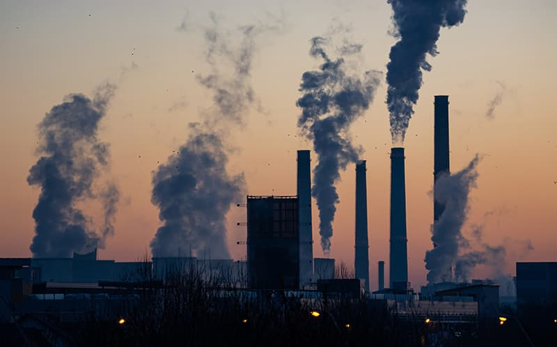

Physical Climate Impacts
-
Rising Sea Levels & Coastal Inundation
Thermal expansion of warming oceans and accelerating runoff from continental ice sheets elevate mean sea levels by over 3.4 mm per year, escalating high-tide flooding and coastal erosion worldwide.
-
Extreme Weather Volatility
A warmer atmosphere retains ~7% more water vapor per 1°C of warming, supercharging tropical cyclones and flash flood events while lengthening prolonged heatwaves and droughts.
-
-
Ocean Acidification
Oceans absorb roughly 30% of anthropogenic CO₂, dropping pH levels and stripping calcifying organisms of carbonate ions.
-
Thermal Coral Bleaching
Marine heatwaves expel essential symbiotic algae from corals, triggering mass ecosystem collapses across tropical reef networks.
Oceanic Disruptions
-
-
Glacial Retreat & Watershed Stress
Accelerated loss of high-altitude mountain snowpacks reduces the reliable seasonal freshwater runoff required by agricultural basins and municipal water reserves downstream.
Ecosystems & Human Systems
-
Agricultural Shock & Food Security
Unpredictable rainfall patterns, unseasonal frost anomalies, and extreme heat compress staple grain yields across major farming belts.
-
Biodiversity Fragmentation & Extinction Risks
Shifting biomes outpace natural animal and plant migration rates, leading to habitat loss for vulnerable endemic and polar fauna.